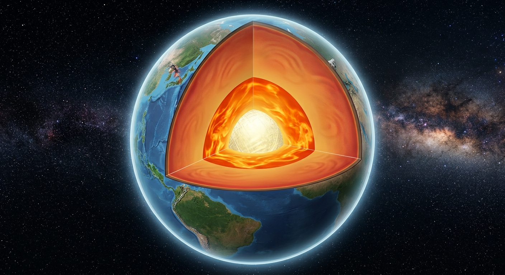

โครงสร้างโลก
โลกของเราเป็นดาวเคราะห์ที่มีการเปลี่ยนแปลงอยู่ตลอดเวลา ทั้งบริเวณ พื้นผิวโลกและโครงสร้างภายในโลก ตลอดช่วงเวลาประมาณ 4,500 ล้านปีที่ผ่านมา การเปลี่ยนแปลงเหล่านี้เกิดจากกระบวนการทางธรณีวิทยาหลายรูปแบบ เช่น การเคลื่อนที่ของแผ่นธรณีภาค การผุพังและการกัดกร่อนของหิน รวมถึงการเปลี่ยนแปลงที่เกิดขึ้นภายในโลก ส่งผลให้เกิดภูมิประเทศที่หลากหลาย เช่น ภูเขา หุบเขา ที่ราบ และมหาสมุทร รวมถึงก่อให้เกิด ธรณีพิบัติภัย เช่น แผ่นดินไหว ภูเขาไฟระเบิด และสึนามิ ปรากฏการณ์เหล่านี้อาจส่งผลทั้งในด้านที่เป็นประโยชน์และเป็นอันตรายต่อสิ่งมีชีวิตและสิ่งแวดล้อม ดังนั้น มนุษย์จึงพยายามศึกษาค้นคว้าและทำความเข้าใจปรากฏการณ์ต่าง ๆ ที่เกิดขึ้นบนโลก เพื่อให้สามารถเตรียมพร้อมและลดผลกระทบจากภัยธรรมชาติได้ โดยเริ่มจากการศึกษาลักษณะและ โครงสร้างภายในโลก ซึ่งเป็นพื้นฐานสำคัญในการทำความเข้าใจกระบวนการต่าง ๆ ที่เกิดขึ้นบนโลกของเรา